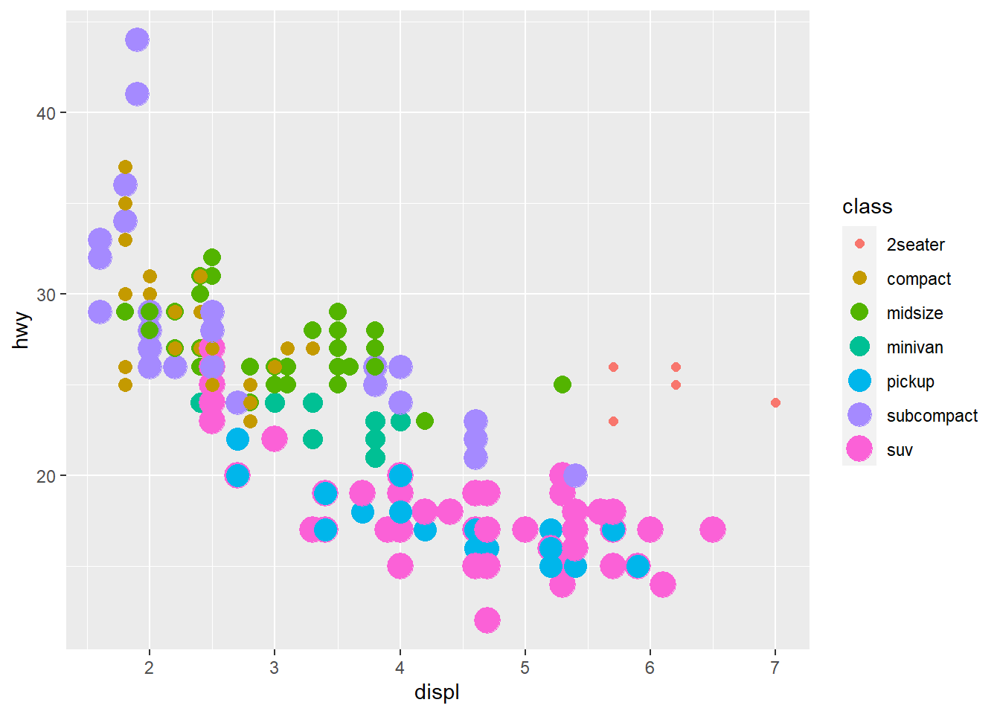

Chapter 1 - Data Viz with ggplot
Data Analytics
10/08/2020
Last updated: 2020-08-18
Checks: 7 0
Knit directory: r4ds_book/
This reproducible R Markdown analysis was created with workflowr (version 1.6.2). The Checks tab describes the reproducibility checks that were applied when the results were created. The Past versions tab lists the development history.
Great! Since the R Markdown file has been committed to the Git repository, you know the exact version of the code that produced these results.
Great job! The global environment was empty. Objects defined in the global environment can affect the analysis in your R Markdown file in unknown ways. For reproduciblity it’s best to always run the code in an empty environment.
The command set.seed(20200814) was run prior to running the code in the R Markdown file. Setting a seed ensures that any results that rely on randomness, e.g. subsampling or permutations, are reproducible.
Great job! Recording the operating system, R version, and package versions is critical for reproducibility.
Nice! There were no cached chunks for this analysis, so you can be confident that you successfully produced the results during this run.
Great job! Using relative paths to the files within your workflowr project makes it easier to run your code on other machines.
Great! You are using Git for version control. Tracking code development and connecting the code version to the results is critical for reproducibility.
The results in this page were generated with repository version f28b0d3. See the Past versions tab to see a history of the changes made to the R Markdown and HTML files.
Note that you need to be careful to ensure that all relevant files for the analysis have been committed to Git prior to generating the results (you can use wflow_publish or wflow_git_commit). workflowr only checks the R Markdown file, but you know if there are other scripts or data files that it depends on. Below is the status of the Git repository when the results were generated:
Ignored files:
Ignored: .Rproj.user/
Untracked files:
Untracked: analysis/images/
Untracked: code_snipp.txt
Note that any generated files, e.g. HTML, png, CSS, etc., are not included in this status report because it is ok for generated content to have uncommitted changes.
These are the previous versions of the repository in which changes were made to the R Markdown (analysis/ch1_ggplot.Rmd) and HTML (docs/ch1_ggplot.html) files. If you’ve configured a remote Git repository (see ?wflow_git_remote), click on the hyperlinks in the table below to view the files as they were in that past version.
| File | Version | Author | Date | Message |
|---|---|---|---|---|
| Rmd | f28b0d3 | sciencificity | 2020-08-18 | Added more exercise solns to Chapter 1 |
| html | 9ea8280 | sciencificity | 2020-08-14 | Build site. |
| Rmd | 82f2e94 | sciencificity | 2020-08-14 | Add Chapter 1 |
| html | e2cdeb5 | sciencificity | 2020-08-14 | Build site. |
| Rmd | 6c088b5 | sciencificity | 2020-08-14 | Add Chapter 1 |
Do cars with big engines use more fuel than cars with small engines?
Hypothesis: Cars with bigger engines use more fuel, i.e. the fuel efficiency declines as the engine size gets bigger. If miles per gallon was on the y-axis and engine size on the x-axis we would see a decreasing trend.
ggplot2::mpg# A tibble: 234 x 11
manufacturer model displ year cyl trans drv cty hwy fl class
<chr> <chr> <dbl> <int> <int> <chr> <chr> <int> <int> <chr> <chr>
1 audi a4 1.8 1999 4 auto(l~ f 18 29 p comp~
2 audi a4 1.8 1999 4 manual~ f 21 29 p comp~
3 audi a4 2 2008 4 manual~ f 20 31 p comp~
4 audi a4 2 2008 4 auto(a~ f 21 30 p comp~
5 audi a4 2.8 1999 6 auto(l~ f 16 26 p comp~
6 audi a4 2.8 1999 6 manual~ f 18 26 p comp~
7 audi a4 3.1 2008 6 auto(a~ f 18 27 p comp~
8 audi a4 quat~ 1.8 1999 4 manual~ 4 18 26 p comp~
9 audi a4 quat~ 1.8 1999 4 auto(l~ 4 16 25 p comp~
10 audi a4 quat~ 2 2008 4 manual~ 4 20 28 p comp~
# ... with 224 more rows# create coordinate system
ggplot(data = mpg, aes(x = displ,
y = hwy))
ggplot(data = mpg) +
geom_point(mapping = aes(x = displ,
y = hwy))
My hypothesis has been confirmed.
num_rows <- nrow(mtcars)
num_cols <- ncol(mtcars)
ex4_plot <- ggplot(data = mpg,
aes(x = hwy,
y = cyl)) +
geom_point()Aesthetics
Exercises
- Run
ggplot(data = mpg). What do you see?
Ans: An empty canvas of a plot. If you add theaes(x = xx, y = yy)you will see an empty canvas with the axes drawn. - How many
rowsare there inmtcars? Columns?
Ans: Number of rows is 32, cols is 11. - What does the
drvvariable describe? Ans: ‘The type of drive train, where f = front-wheel drive, r = rear wheel drive, 4 = 4wd’ - Make a scatterplot of hwy versus cyl.
ex4_plot
- What happens if you make a scatterplot of
classversusdrv? Why is this plot not useful?
ggplot(data = mpg, aes(x = class,
y = drv)) +
geom_point()
These are 2 categorical variables here so this isn’t very useful.
You can give extra information about your dataset by mapping data to aesthetics like size, colour, shape.
ggplot(data = mpg) +
geom_point(mapping = aes(x = displ, y = hwy,
colour = class))
When you put a feature against an aesthetic ggplot will assign a unique level (here colour to each class of the feature) -> this process is called scaling.
ggplot(data = mpg) +
geom_point(aes(x = displ, y = hwy,
size = class))
Mapping a unordered variable like class to an ordered aesthetic like size is not a good idea, and we get a warning here.
ggplot(data = mpg) +
geom_point(aes(x = displ, y = hwy,
alpha = class))
alpha is another aesthetic that we can use.
ggplot(data = mpg) +
geom_point(aes(x = displ, y = hwy,
shape = class))
Warning: The shape palette can deal with a maximum of 6 discrete values because
more than 6 becomes difficult to discriminate; you have 7. Consider
specifying shapes manually if you must have them.
Warning: Removed 62 rows containing missing values (geom_point).

ggplot only uses 6 shapes at a time, so we’re missing suv! When mapping to aesthetics think carefully about which aesthetic makes sense.
If you look at the colour = class plot vs the shape = class plot you may well think - it looks like previously labelled suv is now being considered to be pickup!? There are many points and the points get plotted on top of each other - if you look near displ = 5 and hwy = 12 notice that there is an pickup point there … previously there was an suv point there. Let’s jitter the data so that the points lie a little away from each other to show that there’s not any issue with ggplot, instead the data lying on top of each other shows the last class.
ggplot(data = mpg) +
geom_point(aes(x = displ, y = hwy,
colour = class))
ggplot(data = mpg) +
geom_point(aes(x = displ, y = hwy,
shape = class))
ggplot(data = mpg) +
geom_jitter(aes(x = displ, y = hwy,
colour = class))
ggplot(data = mpg) +
geom_jitter(aes(x = displ, y = hwy,
shape = class))
Occassionally you may want to change all the points sizes uniformly (irrespective of any other data feature) - in this case you may put the aesthetic on the outside of the aes().
ggplot(data = mpg) +
geom_point(aes(x = displ, y = hwy),
colour = "blue")
ggplot(data = mpg) +
geom_point(aes(x = displ,
y = hwy),
size = 4)
Exercises
- What’s gone wrong with this code? Why are the points not blue?
ggplot(data = mpg) +
geom_point(mapping = aes(x = displ,
y = hwy, color = "blue"))
The color attribute maps to a static colour and yet appears within aes().
To correct, put colour = 'blue' outside the aes()
ggplot(data = mpg) +
geom_point(mapping = aes(x = displ,
y = hwy),
color = "blue")
- Which variables in mpg are categorical? Which variables are continuous? (Hint: type ?mpg to read the documentation for the dataset). How can you see this information when you run mpg?
manufacturer, model, trans, drv, fl and class are categories (I also think cyl may be considered a category since it takes on 4 values based on a limited number of cylinders); displ, year, cty, hwy, cyl are continuous. You can convert mpg to a tibble (if it is not already) and check the types using glimpse().
glimpse(mpg)Rows: 234
Columns: 11
$ manufacturer <chr> "audi", "audi", "audi", "audi", "audi", "audi", "audi"...
$ model <chr> "a4", "a4", "a4", "a4", "a4", "a4", "a4", "a4 quattro"...
$ displ <dbl> 1.8, 1.8, 2.0, 2.0, 2.8, 2.8, 3.1, 1.8, 1.8, 2.0, 2.0,...
$ year <int> 1999, 1999, 2008, 2008, 1999, 1999, 2008, 1999, 1999, ...
$ cyl <int> 4, 4, 4, 4, 6, 6, 6, 4, 4, 4, 4, 6, 6, 6, 6, 6, 6, 8, ...
$ trans <chr> "auto(l5)", "manual(m5)", "manual(m6)", "auto(av)", "a...
$ drv <chr> "f", "f", "f", "f", "f", "f", "f", "4", "4", "4", "4",...
$ cty <int> 18, 21, 20, 21, 16, 18, 18, 18, 16, 20, 19, 15, 17, 17...
$ hwy <int> 29, 29, 31, 30, 26, 26, 27, 26, 25, 28, 27, 25, 25, 25...
$ fl <chr> "p", "p", "p", "p", "p", "p", "p", "p", "p", "p", "p",...
$ class <chr> "compact", "compact", "compact", "compact", "compact",...- Map a continuous variable to color, size, and shape. How do these aesthetics behave differently for categorical vs. continuous variables?
ggplot(data = mpg) +
geom_point(aes(x = displ, y = hwy,
colour = cyl))
ggplot(data = mpg) +
geom_point(aes(x = displ, y = hwy,
colour = cty))
The colours are scaled from the lowest to the highest value using dark to light blue.
- What happens if you map the same variable to multiple aesthetics?
ggplot(data = mpg) +
geom_point(aes(x = displ, y = hwy,
colour = class,
size = class))
Here we have both colour and size mapped to class. The plot offers no new information with the second aesthetic so I’d consider it a poor plot. You should use aesthetics mapped to different features in your data to meet with the Axiom that ‘The greatest value of a picture is when it forces us to notice what we never expected to see. –John Tukey’ as mentioned in the beginning of the Aesthetic Mappings section!
- What does the stroke aesthetic do? What shapes does it work with? (Hint: use ?geom_point)
Tip: Did you know that when you call ?geom_point you can go to an example and highlight it, press ‘Ctrl + Enter’ and it will place that example in your console and run it?


# For shapes that have a border (like 21), you can colour the inside and
# outside separately. Use the stroke aesthetic to modify the width of the
# border
ggplot(mtcars, aes(wt, mpg)) +
geom_point(shape = 2, colour = "black", fill = "white", size = 5, stroke = 5)
ggplot(mtcars, aes(wt, mpg)) +
geom_point(shape = 23, colour = "black", fill = "white", size = 5, stroke = 3)

Stroke changes the border width as described in the example comment, and works with any shape that has a border hence will work with shapes 0-14, and 21-24. An example of each is above.
- What happens if you map an aesthetic to something other than a variable name, like aes(colour = displ < 5)? Note, you’ll also need to specify x and y.
ggplot(data = mpg) +
geom_point(mapping = aes(x = displ, y = hwy,
colour = displ
Points are split according to the criteria displ < 5 and are coloured differently depending on what value they have for displacement.
Facets
Another way to add information on your plot is to use facets.
facet_wrap()allows faceting by a single variable- First argument is a formula
~ var_name - Variable passed in should be discrete.
- First argument is a formula
facet_grid()allows the faceting by 2 variables.var_name1 ~ var_name2
ggplot(data = mpg) +
geom_point(mapping = aes(x = displ,
y = hwy)) +
facet_wrap(~ class, nrow = 2)
ggplot(data = mpg) +
geom_point(mapping = aes(x = displ,
y = hwy)) +
facet_grid(drv ~ class)
Exercises
- What happens if you facet on a continuous variable?
ggplot(data = mpg) +
geom_point(aes(x = displ,
y = hwy)) +
facet_wrap(~ cty)
The plot is created but it doesn’t make sense to split our data by a continuous variable.
- What do the empty cells in plot with
facet_grid(drv ~ cyl)mean? How do they relate to this plot?
The empty spots refer to that drv and cyl combination being missing.
ggplot(data = mpg) + geom_point(mapping = aes(x = drv, y = cyl))
ggplot(data = mpg) +
geom_point(mapping = aes(x = drv, y = cyl))
It relates to the above in that you can see that the drv = 4; cyl = 5 combination has no observations. This is also the case in the faceted plot.
3.What plots does the following code make? What does . do?
ggplot(data = mpg) +
geom_point(mapping = aes(x = displ, y = hwy)) +
facet_grid(drv ~ .)
The facet_grid(drv ~ .) facets the drv categories into rows. It says facet this plot by drv as row panels but I don’t want anything as column panels (hence the .).
ggplot(data = mpg) +
geom_point(mapping = aes(x = displ, y = hwy)) +
facet_grid(. ~ cyl)
The facet_grid(. ~ cyl) facets the cyl categories into columns. It says facet this plot by cyl as column panels but I don’t want anything as row panels (hence the .). 4. Take the first faceted plot in this section:
ggplot(data = mpg) +
geom_point(mapping = aes(x = displ, y = hwy)) +
facet_wrap(~ class, nrow = 2)
What are the advantages to using faceting instead of the colour aesthetic? What are the disadvantages? How might the balance change if you had a larger dataset?
ggplot(data = mpg) +
geom_point(mapping = aes(x = displ, y = hwy)) +
facet_wrap(~ class, nrow = 2)
What are the advantages to using faceting instead of the colour aesthetic?
You can see the patterns in each class much easier.What are the disadvantages?
You may lose sight of the overall trend across all observations, and comparing categories becomes more “work”.How might the balance change if you had a larger dataset?
If you have many categories it becomes overwhelming.
- Read ?facet_wrap. What does nrow do? What does ncol do? What other options control the layout of the individual panels? Why doesn’t facet_grid() have nrow and ncol arguments?
From the help page these are the main aspects that alter your visuals.
nrowandncolspecify the number of rows or columns you’re looking for in your plot.scales: Should scales be fixed (“fixed”, the default), free (“free”), or free in one dimension (“free_x”, “free_y”)?- Use the
labelleroption to control how labels are printed. - Use
strip.positionto display the facet labels at the side of your choice. Setting it tobottommakes it act as a subtitle for the axis. This is typically used with free scales and a theme without boxes around strip labels.
- When using facet_grid() you should usually put the variable with more unique levels in the columns. Why?
I would think this orientation makes best use of the screen real estate available.
sessionInfo()R version 3.6.3 (2020-02-29)
Platform: x86_64-w64-mingw32/x64 (64-bit)
Running under: Windows 10 x64 (build 18363)
Matrix products: default
locale:
[1] LC_COLLATE=English_South Africa.1252 LC_CTYPE=English_South Africa.1252
[3] LC_MONETARY=English_South Africa.1252 LC_NUMERIC=C
[5] LC_TIME=English_South Africa.1252
attached base packages:
[1] stats graphics grDevices utils datasets methods base
other attached packages:
[1] flair_0.0.2 forcats_0.5.0 stringr_1.4.0 dplyr_1.0.0
[5] purrr_0.3.4 readr_1.3.1 tidyr_1.1.0 tibble_3.0.3
[9] ggplot2_3.3.0 tidyverse_1.3.0 workflowr_1.6.2
loaded via a namespace (and not attached):
[1] tidyselect_1.1.0 xfun_0.13 haven_2.2.0 lattice_0.20-38
[5] colorspace_1.4-1 vctrs_0.3.2 generics_0.0.2 htmltools_0.4.0
[9] yaml_2.2.1 utf8_1.1.4 rlang_0.4.7 later_1.0.0
[13] pillar_1.4.6 withr_2.2.0 glue_1.4.1 DBI_1.1.0
[17] dbplyr_1.4.3 modelr_0.1.6 readxl_1.3.1 lifecycle_0.2.0
[21] munsell_0.5.0 gtable_0.3.0 cellranger_1.1.0 rvest_0.3.5
[25] evaluate_0.14 labeling_0.3 knitr_1.28 httpuv_1.5.2
[29] fansi_0.4.1 broom_0.5.6 Rcpp_1.0.4.6 promises_1.1.0
[33] backports_1.1.6 scales_1.1.0 jsonlite_1.7.0 farver_2.0.3
[37] fs_1.4.1 hms_0.5.3 digest_0.6.25 stringi_1.4.6
[41] grid_3.6.3 rprojroot_1.3-2 cli_2.0.2 tools_3.6.3
[45] magrittr_1.5 crayon_1.3.4 whisker_0.4 pkgconfig_2.0.3
[49] ellipsis_0.3.1 xml2_1.3.2 reprex_0.3.0 lubridate_1.7.8
[53] rstudioapi_0.11 assertthat_0.2.1 rmarkdown_2.1 httr_1.4.2
[57] R6_2.4.1 nlme_3.1-144 git2r_0.26.1 compiler_3.6.3